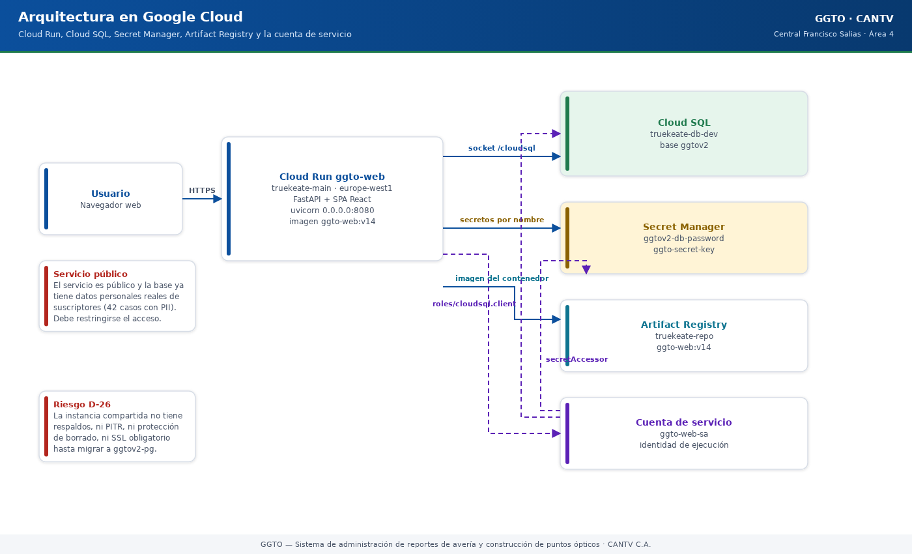

Sistema de administración de reportes de avería y construcción de puntos ópticos
Manual literal · DespliegueManual de Cloud Run y Cloud SQL — GGTO (CANTV, Central Francisco Salias / Área 4)
Manual para todo público. Explica, en lenguaje sencillo, dónde vive la plataforma GGTO en Google Cloud: el servicio Cloud Run que atiende la aplicación, la base de datos Cloud SQL que guarda la información ggtov2, la imagen del contenedor, cómo se conecta todo y qué riesgos están vigentes. Cuando un dato no pudo comprobarse, se indica como «pendiente de confirmar». Este manual nunca escribe valores de secretos: solo los nombra.
Manual para todo público. Explica, en lenguaje sencillo, dónde vive la plataforma GGTO en Google Cloud: el servicio Cloud Run que atiende la aplicación, la base de datos Cloud SQL que guarda la información
ggtov2, la imagen del contenedor, cómo se conecta todo y qué riesgos están vigentes. Cuando un dato no pudo comprobarse, se indica como «pendiente de confirmar». Este manual nunca escribe valores de secretos: solo los nombra.
1Empezar en 5 minutos
- Ubique el servicio. GGTO corre en Cloud Run con el nombre
ggto-web, en el proyectotruekeate-mainy la regióneurope-west1. Cloud Run es el servicio de Google que ejecuta la aplicación en contenedores y la publica por internet. - Abra la dirección de la aplicación. La dirección principal es
https://ggto-web-593453426217.europe-west1.run.app. La misma dirección sirve la pantalla (SPA en React) y la API: por esoGET /, los enlaces profundos del menú y todo/api/v1/*funcionan bajo la misma URL. - Compruebe que está viva. Agregue
/healtha la dirección. Debe responder{"status":"ok"}. Para saber si además alcanza la base de datos, use/ready. - Sepa dónde están los datos. La información vive en la base
ggtov2, dentro de la instancia compartidatruekeate-main:southamerica-east1:truekeate-db-dev, en PostgreSQL 15.18. El usuario de la aplicación esggtov2_app. - Recuerde las dos advertencias. El servicio es público y ya contiene PII real (42 casos): debe restringirse. Además, la instancia no tiene respaldos ni recuperación a un punto en el tiempo (riesgo aceptado D-26): no cargue más datos reales hasta migrar.
2Estado real del despliegue
El despliegue definitivo no vive en el proyecto previsto ggtov2. La facturación de ggtov2
está bloqueada porque el cupo de cinco proyectos de la cuenta de facturación está agotado. Por
esa razón, el servicio se aloja temporalmente en el proyecto truekeate-main, que sí tiene
facturación activa, apuntando a la base ggtov2 de la instancia compartida.
| Elemento | Valor verificado |
|---|---|
| Proyecto actual | truekeate-main |
| Servicio | Cloud Run ggto-web |
| Región | europe-west1 |
| URL principal | https://ggto-web-593453426217.europe-west1.run.app |
| URL alternativa | https://ggto-web-m33mjctj4a-ew.a.run.app |
| Acceso | Público (allUsers con el rol roles/run.invoker) |
| Proyecto previsto a futuro | ggtov2 (número de proyecto 905974355709) |
El despliegue corresponde a la decisión D-43 del registro de decisiones: «servicio Cloud Run
ggto-web en truekeate-main/europe-west1, con cuenta de servicio propia ggto-web-sa,
conectado a ggtov2 por el conector de Cloud SQL». Esa decisión incluye la advertencia explícita de
que el acceso público es una prueba de humo (smoke test) que debe restringirse antes de
producción.

Código del gráfico (Mermaid)
flowchart LR
U["Usuario con navegador"] -->|"HTTPS"| CR["Cloud Run ggto-web<br/>europe-west1"]
CR -->|"socket /cloudsql"| DB[("Cloud SQL<br/>truekeate-db-dev<br/>base ggtov2")]
CR -->|"lee secretos por nombre"| SM["Secret Manager<br/>ggtov2-db-password<br/>ggto-secret-key"]
CR -->|"imagen del contenedor"| AR["Artifact Registry<br/>truekeate-repo<br/>ggto-web:v14"]
CR -.->|"identidad de ejecución"| SA["Cuenta de servicio<br/>ggto-web-sa"]
SA -.->|"roles/cloudsql.client"| DB
SA -.->|"secretAccessor"| SM2.1Cloud Run ggto-web en truekeate-main/europe-west1
Cloud Run ejecuta el contenedor que contiene dos cosas a la vez: la API hecha en FastAPI y la
pantalla o SPA (aplicación de una sola página) compilada en React. El punto de entrada del
contenedor es uvicorn app.main:app --host 0.0.0.0 --port 8080. La aplicación monta la SPA al final
del enrutador para no tapar la API: el componente SPAStaticFiles sirve la carpeta app/web/dist y
responde index.html ante las rutas del cliente. Es decir, la misma URL sirve GET /, los enlaces
profundos de React Router y todo /api/v1/*.
La configuración de ejecución verificada en el servicio incluye:
- Cuenta de servicio de ejecución
ggto-web-sa@truekeate-main.iam.gserviceaccount.com, con los rolesroles/cloudsql.clientyroles/secretmanager.secretAccessorsobre los secretosggtov2-db-passwordyggto-secret-key. Una cuenta de servicio es la «identidad» con la que el contenedor pide permisos a Google. - La instancia Cloud SQL montada
truekeate-main:southamerica-east1:truekeate-db-dev. - El código desplegado es
app/(FastAPI + SQLAlchemy + Argon2id + JWT) yapp/web/(React + Vite + TypeScript).
2.2URL y revision (ggto-web-00014-zqx, imagen v14)
La última revisión documentada del servicio es la siguiente. Una «revisión» es cada versión publicada del servicio; Cloud Run atiende una revisión a la vez.
| Dato | Valor |
|---|---|
| Revisión actual | ggto-web-00014-zqx |
| Imagen | southamerica-east1-docker.pkg.dev/truekeate-main/truekeate-repo/ggto-web:v14 |
| Versión funcional | Ciclo 9 — ALERTAS, Telegram y MCP |
| Pruebas al cierre de esa revisión | 152/152 pruebas pytest |
| Verificación en vivo | 42 casos, 0 fallas, bandeja de salida vacía, 73 endpoints |
La revisión inmediatamente anterior documentada fue ggto-web-00013-9pf con la imagen v13. Existe
una secuencia completa de revisiones históricas por ciclo: ggto-web-00002-rbl (v2), 00003-6zb
(v3), 00004-cj9 (v4), 00005-rxm (v5), 00006-htl (v6), 00007-vsr (v7), 00008-vr5 (v8),
00009-fvc (v9), 00011-ksr (v11), 00012-lbl (v12), 00013-9pf (v13) y 00014-zqx (v14).
La revisión activa en el momento de leer este manual debe confirmarse con el comando
gcloud run services describe ggto-web --region=europe-west1 --project=truekeate-main. El dato aquí consignado es el último documentado en el repositorio, no una lectura en vivo.
2.3SA de ejecucion
La cuenta de servicio de ejecución es la identidad con la que el contenedor accede a Cloud SQL y a
Secret Manager. Además de ggto-web-sa@truekeate-main.iam.gserviceaccount.com, el proyecto mantiene
dos cuentas planificadas en el diseño original de ggtov2:
| Cuenta | Rol previsto |
|---|---|
ggtov2-app@ggtov2.iam.gserviceaccount.com |
Cuenta de ejecución (runtime) del proyecto GGTOv2 |
ggtov2-deploy@ggtov2.iam.gserviceaccount.com |
Cuenta de despliegue |
ggto-web-sa@truekeate-main.iam.gserviceaccount.com |
Cuenta de ejecución real del servicio |
La cuenta ggtov2-app@ggtov2 conserva un permiso cruzado hacia truekeate-main: el rol
roles/cloudsql.client. Ese permiso se otorgó consultando la política de permisos
(getIamPolicy) y volviéndola a fijar (setIamPolicy) sobre truekeate-main, añadiendo el enlace
con la cuenta de GGTOv2.
3Cloud SQL
3.1instancia truekeate-db-dev (PostgreSQL 15.18)
La base de datos operativa de GGTO es una base dedicada dentro de una instancia compartida con el proyecto TrueKeate. La separación es lógica (por base de datos), no física (por instancia). Este aspecto está señalado como riesgo en la documentación de infraestructura.
| Dato | Valor |
|---|---|
| Instancia | truekeate-main:southamerica-east1:truekeate-db-dev |
| Motor | POSTGRES_15 / versión 15.18 |
| Región de la instancia | southamerica-east1 |
| Tipo y disco | db-f1-micro, 10 GB PD_SSD, ZONAL |
| IP pública | 34.39.180.101 (red autorizada 35.232.138.181/32) |
| SSL | ALLOW_UNENCRYPTED_AND_ENCRYPTED (no obligatorio) |
| Backups / PITR / protección de borrado | / / |
El esquema completo de la base (RepoTecnico/db/schema.sql, 38 821 bytes) se aplicó el 2026-09-26
en una sola transacción y sin errores. La verificación posterior confirmó 35 tablas, las extensiones
pgcrypto 1.3 y pg_trgm 1.6, seguridad por fila (RLS) en las tablas caso y despacho, 14
disparadores actualizado_en, 2 índices trigram y los datos iniciales previstos.
3.2base ggtov2 y usuario ggtov2_app
| Recurso | Valor |
|---|---|
| Base de datos | ggtov2 (juego de caracteres UTF8) |
| Usuario | ggtov2_app (contraseña aleatoria de 32 caracteres, host %) |
| Contraseña | Secret Manager projects/truekeate-main/secrets/ggtov2-db-password |
| Secreto de conexión | projects/truekeate-main/secrets/ggtov2-db-connection |
La base y el usuario se crearon con el guion 10_usar_instancia_truekeate.sh, que es idempotente:
si la base ya existe no la vuelve a crear, y si el usuario ya existe no le cambia la contraseña.
El guion genera la contraseña con openssl rand -base64 36, la filtra a caracteres alfanuméricos y
la recorta a 32 caracteres sin imprimirla. En cada ejecución publica una versión nueva del secreto.
3.3socket /cloudsql/...
La aplicación reconoce el socket Unix de Cloud SQL por una convención simple: si DB_HOST comienza
con /, la dirección se construye sin puerto y el servidor viaja como parámetro de consulta host=,
que es la forma que espera el conector. El valor que se monta en el contenedor es:
DB_HOST=/cloudsql/truekeate-main:southamerica-east1:truekeate-db-dev
DB_PORT=5432
DB_NAME=ggtov2
DB_USER=ggtov2_app
DB_SSLMODE=require
En Cloud Run la instancia se monta con la opción
--add-cloudsql-instances=truekeate-main:southamerica-east1:truekeate-db-dev. La ventaja del socket
es que el conector usa TLS (cifrado) y no requiere abrir redes, dado que la cuenta de servicio ya
tiene roles/cloudsql.client en truekeate-main.
Detalle a verificar: el guion
07_cloudrun_web.shdel repositorio no incluye--add-cloudsql-instancesni elDB_HOSTdel socket. Su cuerpo declaraDB_HOST=/cloudsql/truekeate-main:southamerica-east1:ggtov2-pg, apuntando a la instancia planificada deggtov2y no a la instancia compartida que realmente se usa. El montaje efectivo de la instancia compartida se hizo por fuera de ese guion; el comando exacto empleado está pendiente de confirmar.
3.4SSL y roles endurecidos (entornos_globales.md:83-106)
El endurecimiento del rol ggtov2_app (es decir, quitarle permisos que no necesita) se aplicó el
2026-09-25 y está verificado:
| Cambio | Estado |
|---|---|
CREATEROLE revocado |
|
CREATEDB revocado |
|
NOINHERIT aplicado (neutraliza cloudsqlsuperuser) |
|
Membresía cloudsqlsuperuser revocada |
No fue posible por SQL: Cloud SQL no otorga ADMIN OPTION; la pertenencia persiste pero no se hereda |
CONNECT/TEMPORARY/CREATE de PUBLIC revocados en truekeate, postgres y template1 |
(el usuario ggtov2_app recibe «permission denied for database» al intentar entrar a truekeate) |
CONNECT re-otorgado a app y postgres |
(TrueKeate sigue operando, con 39 tablas) |
CONNECT + CREATE en la base ggtov2 y el esquema public |
(el esquema de prueba se aplica correctamente) |
truekeate-app-sa sin acceso a los secretos de GGTO |
(solo ggtov2-app@ggtov2 figura en el IAM de ambos secretos) |
El estado original (antes del endurecimiento) estaba documentado con createrole=True,
createdb=True, cloudsqlsuperuser=True y CREATE_on_public=True, lo que confirma que la
corrección fue efectiva.
Sobre el SSL: la instancia permanece con sslMode: ALLOW_UNENCRYPTED_AND_ENCRYPTED porque cambiarla
a ENCRYPTED_ONLY afecta a la aplicación TrueKeate, que comparte la instancia. La recomendación
documentada es fijar ENCRYPTED_ONLY, dado que el conector de Cloud SQL siempre cifra y la
aplicación coexistente no debería romperse. Sin embargo, no se cambió sin autorización, por
tratarse de una instancia en uso.
4Imagen de contenedor
4.1multi-etapa Node+Python
La imagen se construye con el archivo app/Dockerfile y el contexto de construcción en el
directorio app/. Es una construcción de dos etapas:
| Etapa | Base | Acciones |
|---|---|---|
1 — web |
node:20-slim |
npm ci con web/package*.json y npm run build |
| 2 — ejecución (runtime) | python:3.12-slim |
Instala requirements.txt y copia el código |
La segunda etapa fija PYTHONDONTWRITEBYTECODE=1, PYTHONUNBUFFERED=1 y PORT=8080, instala las
dependencias sin caché, copia el código a /srv/app y superpone el resultado de la etapa Node en
/srv/app/web/dist. El comando final (CMD) arranca Uvicorn en el puerto 8080. El contexto de
construcción usa el archivo app/.dockerignore.
Esta arquitectura multi-etapa es la que se verificó en el despliegue del Ciclo 2: «build multi-etapa Node+Python». El requisito RNF-25 exige precisamente una «imagen Docker reproducible» y configuración solo por variables de entorno.
4.2Artifact Registry truekeate-repo
Las imágenes se publican en el repositorio:
southamerica-east1-docker.pkg.dev/truekeate-main/truekeate-repo/ggto-web:v14
El nombre de la imagen sigue el patrón
<región>-docker.pkg.dev/<proyecto>/<repositorio>/<servicio>:<etiqueta>. En el diseño original de
ggtov2 el repositorio sería europe-west1-docker.pkg.dev/ggtov2/ggtov2-web, y el guion de
despliegue usa por defecto $REGION-docker.pkg.dev/$PROJECT_ID/ggtov2-web/app:latest. El
repositorio realmente empleado es truekeate-repo en la región southamerica-east1, coherente con
la ubicación de la instancia Cloud SQL.
El procedimiento de
docker build/docker pushy el proyecto de Cloud Build asociado para las imágenesv1…v14están pendientes de confirmar: la máquina de desarrollo no tienedockerinstalado y no hay un archivocloudbuild.yamlen el repositorio.
5Conexion de la aplicacion
5.1socket vs proxy local 127.0.0.1:5433
GGTO se conecta a PostgreSQL de dos maneras según el entorno, y ambas convergen en la misma función
build_url():
| Entorno | DB_HOST |
DB_PORT |
DB_SSLMODE |
|---|---|---|---|
| Cloud Run (producción) | /cloudsql/truekeate-main:southamerica-east1:truekeate-db-dev |
5432 |
require |
| Desarrollo / E2E local | 127.0.0.1 (proxy) |
5433 |
disable |
El proxy local se levanta con:
nohup /home/dsh/tools/cloud-sql-proxy \
--project truekeate-main --address 127.0.0.1 --port 5433 \
truekeate-main:southamerica-east1:truekeate-db-dev &
El puerto 5433 evita el choque con un PostgreSQL local en el puerto 5432. La conectividad desde
la máquina de desarrollo también admite conexión directa por la IP pública 34.39.180.101:5432 con
SSL y la red autorizada 35.232.138.181/32.
5.2app/core/db.py:26-36
La lógica de conexión es la siguiente: si el servidor empieza por / se emite la dirección sin
puerto y se añade el parámetro host=; en caso contrario se construye una dirección TCP con
host:puerto y se añade sslmode; finalmente, si DB_SCHEMA tiene valor, se agrega
options=-csearch_path=<esquema>,public.
El motor se crea con pool_pre_ping=True, pool_size=5 y max_overflow=5. La opción
pool_pre_ping hace que las conexiones muertas se detecten antes de usarse, algo importante en
Cloud Run, donde la instancia puede reciclarse. La sesión por petición se entrega con get_db() y
se cierra siempre.
DB_PASSWORDno aparece en el bloque de variables de Cloud Run de este manual por política de secretos. Se inyecta desde Secret Manager y su nombre (ggtov2-db-password) sí está documentado.
6Despliegue a ggto-web
El despliegue real se ejecuta con pasos equivalentes a los que describe el guion
07_cloudrun_web.sh. Ese guion escribe el cuerpo JSON del servicio y lo crea o reemplaza mediante
la API regional de Cloud Run, usando el ayudante api(), que obtiene un token de acceso por
$GOOGLE_ACCESS_TOKEN, por gcloud, por credenciales de usuario o por el servidor de metadatos.
Los elementos del despliegue que el guion fija son:
| Elemento | Valor |
|---|---|
| Servicio | ggtov2-web (variable SERVICE) |
| Imagen | $IMAGE o $REGION-docker.pkg.dev/$PROJECT_ID/ggtov2-web/app:latest |
| Puerto del contenedor | 8080 |
| Variables de entorno | DB_USER, DB_NAME, DB_HOST, SECRET_KEY |
| Recursos | CPU 1, memoria 512Mi |
| Escalado | mínimo 0, máximo 10 |
| Tiempo de espera | 300s |
| Acceso | roles/run.invoker para allUsers |
SECRET_KEY no se escribe en claro: se inyecta por referencia al secreto ggtov2-app-secret-key
con versión latest. El nombre del secreto efectivamente usado por el servicio desplegado es
ggto-secret-key.
6.1Pasos operativos
Los pasos siguientes reflejan el patrón del guion y la configuración verificada del servicio real.
El servicio desplegado se llama ggto-web en truekeate-main; los marcadores entre ángulos
deben sustituirse por valores reales sin escribir secretos en la línea de comandos.
-
Autenticarse y fijar el proyecto destino.
gcloud auth login gcloud config set project truekeate-main gcloud config set run/region europe-west1El guion equivalente obtiene el token con el ayudante
gcp_token(). -
Construir y publicar la imagen en Artifact Registry (
southamerica-east1-docker.pkg.dev/truekeate-main/truekeate-repo/ggto-web:<etiqueta>), siguiendo la construcción multi-etapa deapp/Dockerfile. -
Crear o actualizar el servicio montando Cloud SQL y declarando los secretos. La forma canónica en
gcloudes:gcloud run deploy ggto-web \ --project truekeate-main \ --region europe-west1 \ --image southamerica-east1-docker.pkg.dev/truekeate-main/truekeate-repo/ggto-web:<tag> \ --port 8080 \ --cpu 1 --memory 512Mi \ --min-instances 0 --max-instances 10 \ --timeout 300 \ --add-cloudsql-instances truekeate-main:southamerica-east1:truekeate-db-dev \ --set-env-vars DB_HOST=/cloudsql/truekeate-main:southamerica-east1:truekeate-db-dev,DB_PORT=5432,DB_NAME=ggtov2,DB_USER=ggtov2_app,DB_SSLMODE=require \ --set-secrets SECRET_KEY=ggto-secret-key:latest,DB_PASSWORD=ggtov2-db-password:latest \ --service-account ggto-web-sa@truekeate-main.iam.gserviceaccount.comLas variables y los recursos de este comando reproducen el guion del repositorio (puerto, CPU, memoria, escalado y tiempo de espera) y el montaje del socket documentado. La opción
--add-cloudsql-instancescon la instancia compartida es el paso que no está en el guion del repositorio y que debe ejecutarse de forma explícita (ver la observación de la sección socket /cloudsql/...). -
Permitir la invocación. El guion publica el servicio para
allUsers. Esto es una prueba de humo y debe restringirse antes de producción. La alternativa recomendada es IAP (Identity Aware Proxy, que exige iniciar sesión) o la invocación autenticada. -
Verificar la revisión, la URL y los endpoints de salud (ver la sección Verificacion).
6.2Alternativa por API REST
El guion del repositorio no usa gcloud run deploy, sino la API v2 directamente: construye el
cuerpo JSON con python3 y hace
POST https://run.googleapis.com/v2/projects/$PROJECT_ID/locations/$REGION/services?serviceId=$SERVICE.
El IAM se fija después con services/$SERVICE:setIamPolicy. Una ventaja de esta vía es que el
cuerpo JSON admite el bloque vpcAccess con la red ggtov2-vpc y la subred ggtov2-subnet,
pensado para la salida VPC directa del diseño original.
7Bloqueo de ggtov2 y plan de migracion (entornos_globales.md:360-369)
El proyecto ggtov2 no puede alojar todavía el servicio. El estado del bloqueo es:
| Requisito | Estado |
|---|---|
Facturación en ggtov2 |
Desactivada (cupo de 5 proyectos agotado) |
APIs de despliegue en ggtov2 |
run, artifactregistry, cloudbuild y secretmanager no se pueden habilitar sin facturación |
Cloud Run / Artifact Registry en ggtov2 |
No existen |
El plan de migración, cuando se desbloquee la facturación, es:
- Ejecutar el guion
07_cloudrun_web.shpara crear el servicio enggtov2con su propia imagen eneurope-west1-docker.pkg.dev/ggtov2/ggtov2-web. - Crear y migrar a un Cloud SQL propio
ggtov2-pg(PostgreSQL 16) con el tipodb-custom-2-7680, alta disponibilidadREGIONAL, SSLENCRYPTED_ONLY, respaldos y PITR (recuperación a un punto en el tiempo). - Migrar los datos de
ggtov2(instancia compartida) al Cloud SQL propio y reapuntarDB_HOSTal nuevo socket.
La migración cierra el riesgo aceptado D-26 y cumple RNF-16 (respaldo con RPO ≤ 24 h y
RTO ≤ 4 h) y RNF-17 (disponibilidad ≥ 99 %). Hay un requisito previo de negocio: liberar cupo
o solicitar aumento de cuota para habilitar compute, run, secretmanager, cloudkms,
storage, artifactregistry y un Cloud SQL propio.
El plan de corte (ventana, herramienta de volcado y restauración, y validación de integridad) está pendiente de confirmar. La máquina de desarrollo no tiene
psqlnidocker, por lo que la ejecución del traslado requiere habilitar herramientas adicionales.
8Riesgos
8.1D-26 sin backups/PITR
El riesgo D-26 está registrado y aceptado formalmente: no se modifican los respaldos, el PITR ni
el SSL de truekeate-db-dev, por ser una instancia compartida de TrueKeate. El dueño es la Dirección
del proyecto, la fecha de registro es 2026-09-25 y el cierre previsto es migrar a ggtov2-pg con
respaldos, PITR y SSL al desbloquear la facturación. Incluye la instrucción explícita de no cargar
datos reales hasta entonces.
El estado técnico que sustenta el riesgo es: respaldos , PITR , protección de borrado y SSL no obligatorio. Los requisitos RNF-16 y RNF-17 definen el objetivo a cumplir, y el documento de requerimientos advierte que la base provisional no cumple RNF-16 ni SSL.
Consecuencia operativa: ante una pérdida o corrupción de la base ggtov2, no existe
restauración a un punto en el tiempo. Cualquier dato de producción cargado en esta instancia queda
sin respaldo.
8.2servicio publico con PII real (debe restringirse)
El servicio ggto-web es accesible por allUsers (es decir, por cualquiera que tenga la dirección)
y contiene PII de suscriptores: 42 casos reales cargados desde el archivo
detalle_averias_gpon 15_09_2026.csv por el Super Usuario. La propia documentación advierte que
«conviene restringir el acceso y evaluar el traslado a una instancia con respaldo (RNF-16) antes de
seguir cargando información».
Este riesgo figura como pendiente externo de primer orden en el estado del proyecto: «Restringir el
acceso público (ya hay PII real)». La mitigación recomendada es IAP o invocación autenticada.
Adicionalmente, CORS_ORIGINS por defecto es *, lo que refuerza la necesidad de endurecer el
acceso.
8.3roles de BD (NOINHERIT, riesgo residual)
El rol ggtov2_app conserva la membresía cloudsqlsuperuser porque Cloud SQL no otorga
ADMIN OPTION y no es posible revocarla por SQL. Con NOINHERIT, la pertenencia no se hereda,
pero un SET ROLE cloudsqlsuperuser explícito podría recuperar privilegios. La corrección definitiva
exige recrear el rol, algo inviable con los privilegios actuales: DROP ROLE exige ser miembro o
superusuario, y el usuario postgres no es rolsuper. La decisión adoptada fue aceptar el riesgo
residual con NOINHERIT y documentarlo.
El estado verificado del rol es: CREATEROLE revocado, CREATEDB revocado, NOINHERIT aplicado y
sin acceso a las bases truekeate, postgres y template1.
9Verificacion
La verificación de un despliegue se apoya en tres endpoints de diagnóstico más el de metadatos.
Todos están definidos en app/api/routes_health.py:
| Endpoint | Tipo | Autenticación |
|---|---|---|
GET /health |
Liveness — no toca la base | Público |
GET /ready |
Readiness — consulta la base | Público |
GET /api/v1/info |
Metadatos del servicio | Público |
GET /api/v1/resumen |
Conteos del esquema | Requiere token |
/health devuelve {"status":"ok"} sin acceso a datos. /ready ejecuta una consulta que devuelve
la versión de PostgreSQL, la base actual, el usuario y el número de tablas de public; si falla,
responde 503 con el tipo de excepción. /api/v1/info devuelve servicio, version, entorno y
la ruta de la documentación. /api/v1/resumen cuenta tablas, centrales, roles, cuadrillas, causas y
parámetros, y también responde 503 si la base no está disponible.
Comandos de verificación posteriores a un despliegue:
# Revisión y URL del servicio
gcloud run services describe ggto-web \
--project truekeate-main --region europe-west1 \
--format='value(status.latestReadyRevisionName,status.url)'
# Salud (públicos)
curl -sf https://ggto-web-593453426217.europe-west1.run.app/health
curl -sf https://ggto-web-593453426217.europe-west1.run.app/ready
curl -sf https://ggto-web-593453426217.europe-west1.run.app/api/v1/info
Respuestas verificadas en producción al cierre del despliegue:
| Endpoint | Respuesta documentada |
|---|---|
GET / |
SPA React (index.html + /assets/*); enlaces profundos vía SPAStaticFiles |
GET /api/v1/info |
{"servicio":"GGTO API","version":"0.2.0","entorno":"production",...} |
GET /health |
{"status":"ok"} |
GET /ready |
{"status":"ready","base":"ggtov2","postgres":"PostgreSQL 15.18","tablas":35} |
GET /api/v1/resumen |
🔒 requiere token |
Discrepancia entre documentos: la respuesta de
/api/v1/infoconsignada en el documento de entornos muestra"version":"0.2.0", mientras queAPP_VERSIONpor defecto en el código es0.9.0y el informe de Fase 4 evalúaapp/como v0.9.0. El valor real en la revisión desplegada está pendiente de confirmar, leyendo el endpoint o la variableAPP_VERSIONdel servicio.
Comprobaciones adicionales recomendadas tras cualquier despliegue:
9.0.1Lista de comprobacion posterior al despliegue
- Registros sin errores de autenticación contra Cloud SQL: la aplicación registra cada petición
con
request_id, método, ruta, código y duración medianteObservabilidadMiddleware, y el formato de registro incluye marca de tiempo, nivel y nombre del registrador. - Estado de los datos: que
/readyreportetablas: 35y PostgreSQL15.18, coherentes con el esquema desplegado. - Prueba de escritura: un alta manual de caso debe generar un identificador
REF-<CENTRAL>-<NNNNNN>mediante la funcióngenerar_id_averia_ref. - Revisión de estado con
gcloud run revisions list, para confirmar que la nueva revisión recibe el 100 % del tráfico. Ese fue el procedimiento empleado al rotar la contraseña de TrueKeate.
Finalmente, el endpoint ready público no expone secretos, pero sí revela el nombre de la base,
el usuario y la versión del motor. En un servicio con PII y acceso abierto, esa exposición es un
argumento adicional para restringir el invocador y evaluar la restricción de /ready en producción;
el endurecimiento concreto está pendiente de confirmar.